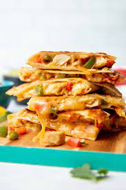

Experience the ultimate comfort food with my signature meatloaf recipe. Succulent ground beef, aromatic herbs, and a touch of sweetness come together in a moist and flavorful masterpiece. Topped with a tantalizing glaze, this dish is a true taste of home that will leave you craving more.

Prepare to be captivated by the mouthwatering allure of my homemade chili. This tantalizing blend of robust flavors combines tender chunks of beef, a harmonious fusion of spices, and a medley of beans, creating a bowl of sheer delight that will warm your soul and leave you craving more.
Savor the delightful union of tender beef strips and vibrant broccoli florets, bathed in a savory soy-based sauce, resulting in a stir-fry masterpiece that offers a perfect balance of succulence and crunch, leaving your taste buds in a state of pure bliss

Indulge in the comforting harmony of my Chicken and Green Bean Casserole, where juicy chicken mingles with crisp green beans, smothered in a velvety cream sauce and crowned with a golden layer of crispy breadcrumbs, creating a mouthwatering symphony of flavors that will warm your heart and leave you longing for more.
Treat yourself to the irresistible joy of my homemade chicken quesadillas, where tender seasoned chicken, gooey melted cheese, and a medley of flavorful spices are sandwiched between crispy tortillas, creating a mouthwatering delight that will make your taste buds dance with delight.
Delight in the comforting embrace of my chicken and stuffing bake, where juicy chicken breasts are nestled amongst a bed of herb-infused stuffing, creating a heavenly combination of tender meat and delectably seasoned bread that will transport you to a cozy, home-cooked meal with every bite.
[Home]